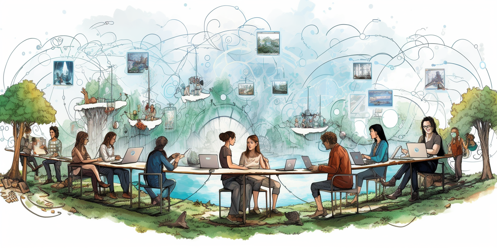

TFGrid Tokenomics Upgrade
The tokenomics of any digital ecosystem plays a pivotal role in determining its sustainability, growth, and value proposition. In the case of ThreeFold, there are evident challenges with the current tokenomics model that necessitate an upgrade.
The current tokenomics model of ThreeFold doesn't fully reflect the platform's worth and potential. An upgrade is essential to rectify existing challenges, ensuring that the tokenomics aligns with the platform's growth trajectory and offers a fair representation of its value.
- Lack of Commercial Utilization:
- The present model doesn't sufficiently incentivize commercial utilization. This means that the tokens, instead of being used to facilitate transactions or access services within the ecosystem, are often liquidated.
- Selling Pressure from Farmers:
- The current dynamics have led to a scenario where ThreeFold farmers frequently sell their tokens. This consistent selling exerts downward pressure on the token's price, preventing it from realizing its true potential value.
- Undervalued Market Cap:
- The cumulative effect of these factors has resulted in a market capitalization for the liquid tokens that is significantly undervalued. With a market cap hovering around 5 million dollars, it starkly contrasts with the intrinsic value and potential of the ThreeFold ecosystem.
Future Optimism: Despite the current challenges, there's a strong belief in the imminent positive shift in the token's value. As ThreeFold gears up to launch more commercial workloads and with the anticipated funding for TF Cloud, there's an expectation of increased commercial utilization. This, in turn, can drive demand for the token, potentially boosting its price and aligning the market cap more closely with ThreeFold's true value.
We are working on some fundamental changes which will achieve the following
- TFT farming will slow down and there will probably never be more than 1 billion TFT ever
- Farmers will receive more reward based on Utilization
- Staking is a required for becoming a future Farmer or Farming Cooperative
- P2P Billing and Payments will lead to using TFT for much more services, which will have positive impact as well.
Some more info see https://github.com/threefoldtech/home/issues/1448